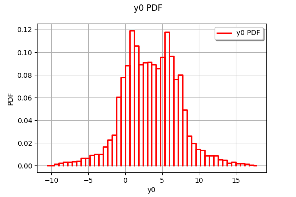
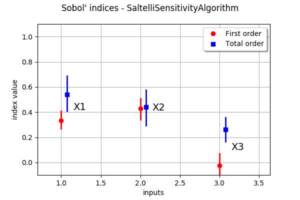
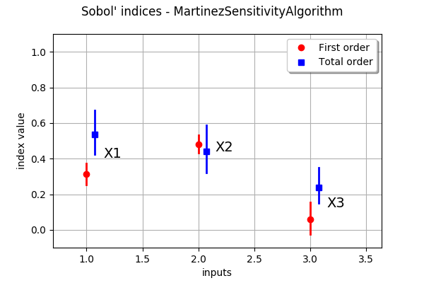

Estimate Sobol’ indices for the Ishigami function by a sampling method¶
In this example, we estimate the Sobol’ indices for the Ishigami function by sampling methods.
Let  and
and  . We consider the function
. We consider the function

for any ![X_1,X_2,X_3\in[-\pi,\pi]](../../_images/math/dfb09e35eba35fefd35899f447cf6c501f995aa7.svg)
We assume that the random variables  are independent and have the uniform marginal distribution in the interval from
are independent and have the uniform marginal distribution in the interval from  to
to  :
:

Introduction¶
In this example we are going to quantify the correlation between the input variables and the output variable of a model thanks to the Sobol indices.
The Sobol indices allow to evaluate the importance of a single variable or a specific set of variables. Here the Sobol indices are estimated by sampling, from two input samples and a numerical function.
In theory, Sobol indices range is ![\left[0; 1\right]](../../_images/math/a8f412b4a50c74f89105adfea2c91aaa1c8dd6b8.svg) ; the more the indice value is close to 1 the more the variable is important toward the output of the function.
; the more the indice value is close to 1 the more the variable is important toward the output of the function.
Let us denote by  the input dimension of the model.
the input dimension of the model.
The Sobol’ indices can be computed at different orders.
The first order indices evaluate the importance of one variable at a time.
The
total indices give the relative importance of every variables except the variable  , for every variable.
, for every variable.In general, we are only interested in first order and total Sobol’ indices. There are situations, however, where we want to estimate interactions. The second order indices evaluate the importance of every pair of variables; this represents
indices.
In practice, when the number of input variables is not small (say, when ), then the number of second order indices is too large for being easy to analyze. In these situations, we limit the analysis to the first order and total Sobol’ indices.
Define the model¶
[1]:
import openturns as ot
import numpy as np
Create the Ishigami test function.
[2]:
ot.RandomGenerator.SetSeed(0)
formula = ['sin(X1) + 7. * sin(X2)^2 + 0.1 * X3^4 * sin(X1)']
input_names = ['X1', 'X2', 'X3']
g = ot.SymbolicFunction(input_names, formula)
Create the probabilistic model
[3]:
inputDimension = 3
distributionList = [ot.Uniform(-np.pi, np.pi)] * inputDimension
distribution = ot.ComposedDistribution(distributionList)
Draw the function¶
[4]:
n = 10000
sampleX = distribution.getSample(n)
sampleY = g(sampleX)
[5]:
def plotXvsY(sampleX, sampleY, figsize=(15,3)):
import pylab as pl
import openturns.viewer
dimX = sampleX.getDimension()
inputdescr = sampleX.getDescription()
fig = pl.figure(figsize=figsize)
for i in range(dimX):
ax = fig.add_subplot(1, dimX, i+1)
graph = ot.Graph('', inputdescr[i], 'Y', True, '')
cloud = ot.Cloud(sampleX[:,i],sampleY)
graph.add(cloud)
_ = ot.viewer.View(graph, figure=fig, axes=[ax])
return None
plotXvsY(sampleX, sampleY)
[6]:
ot.HistogramFactory().build(sampleY).drawPDF()
[6]:

We see that the distribution of the output has two modes.
Estimate the Sobol’ indices¶
We first create a design of experiments with the SobolIndicesExperiment. Since we are not interested in the second order indices for the moment, we use the default value of the third argument (we will come back to this topic later).
[7]:
size = 1000
sie = ot.SobolIndicesExperiment(distribution, size)
inputDesign = sie.generate()
inputDesign.setDescription(input_names)
inputDesign.getSize()
[7]:
5000
We see that 5000 function evaluations are required to estimate the first order and total Sobol’ indices.
Then we evaluate the outputs corresponding to this design of experiments.
[8]:
outputDesign = g(inputDesign)
Then we estimate the Sobol’ indices with the SaltelliSensitivityAlgorithm.
[9]:
sensitivityAnalysis = ot.SaltelliSensitivityAlgorithm(inputDesign, outputDesign, size)
The getFirstOrderIndices and getTotalOrderIndices method returns the estimates of the Sobol’ indices.
[10]:
sensitivityAnalysis.getFirstOrderIndices()
[10]:
[0.334197,0.42868,-0.0246479]
[11]:
sensitivityAnalysis.getTotalOrderIndices()
[11]:
[0.538721,0.440278,0.2622]
The draw method produces the following graphics. The vertical bars represents 95% confidence intervals of the estimates.
[12]:
graph = sensitivityAnalysis.draw()
graph
[12]:

We see that the variable
 , with a total Sobol’ indice close to 0.6, is the most significant variable, taking into account its effet by itself or with its interactions with other variables. The first order indice is close to 0.3, which implies that, for the interactions (and only the interactions) produce almost 0.3 of the total variance.
, with a total Sobol’ indice close to 0.6, is the most significant variable, taking into account its effet by itself or with its interactions with other variables. The first order indice is close to 0.3, which implies that, for the interactions (and only the interactions) produce almost 0.3 of the total variance.The variable
 has the highest first order indice, but has no interactions since the total order indice is close to the first order indice. Its total Sobol’ indice is approximately equal to 0.4.
has the highest first order indice, but has no interactions since the total order indice is close to the first order indice. Its total Sobol’ indice is approximately equal to 0.4.The variable
 has a first order indice close to zero. However, it has an impact to the total variance thanks to its interactions with .
has a first order indice close to zero. However, it has an impact to the total variance thanks to its interactions with .We see that, because of the sampling, the variability of the Sobol’ indices estimates is quite large, even with a relatively large sample size. Moreover, since the exact first order Sobol’ indice for
is zero, its estimate has 50% chance of being nonpositive.
Estimate the second order indices¶
[13]:
size = 1000
computeSecondOrder = True
sie = ot.SobolIndicesExperiment(distribution, size, computeSecondOrder)
inputDesign = sie.generate()
print(inputDesign.getSize())
inputDesign.setDescription(input_names)
outputDesign = g(inputDesign)
8000
We see that 8000 function evaluations are now required; this is 3000 more evaluations than in the previous situation.
[14]:
sensitivityAnalysis = ot.SaltelliSensitivityAlgorithm(inputDesign, outputDesign, size)
[15]:
second_order = sensitivityAnalysis.getSecondOrderIndices()
for i in range(inputDimension):
for j in range(i):
print('2nd order indice (%d,%d)=%g' % (i,j,second_order[i,j]))
2nd order indice (1,0)=-0.0805798
2nd order indice (2,0)=0.0914596
2nd order indice (2,1)=-0.0988192
This shows that only the interaction between and is significant (beware of the index shift between the Python indice and the mathematical one).
Using a different estimator¶
We have used the SaltelliSensitivityAlgorithm class to estimate the indices. Other classes are available in the library; the following list presents all the available estimators. * SaltelliSensitivityAlgorithm * MartinezSensitivityAlgorithm * JansenSensitivityAlgorithm * MauntzKucherenkoSensitivityAlgorithm
In order to compare the results with another method, we use the MartinezSensitivityAlgorithm class.
[16]:
sensitivityAnalysis = ot.MartinezSensitivityAlgorithm(inputDesign, outputDesign, size)
[17]:
graph = sensitivityAnalysis.draw()
graph
[17]:

We see that this does not change significantly the results in this particular situation.